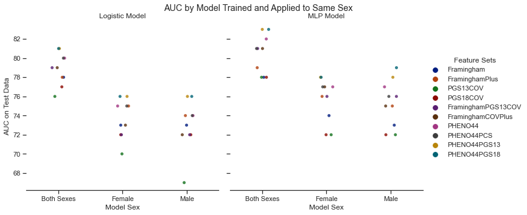
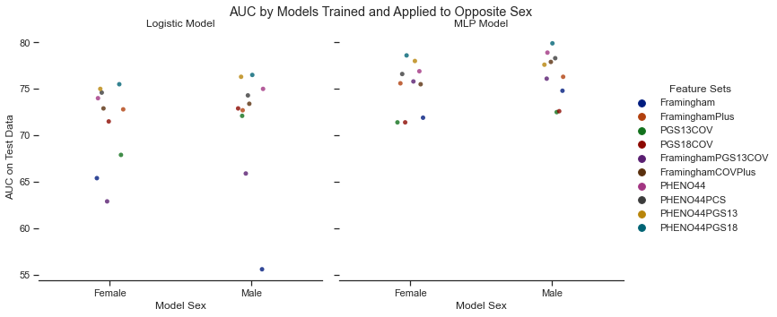
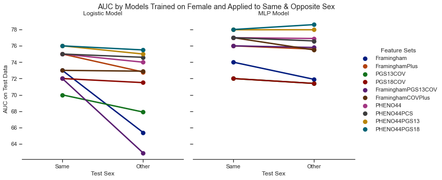
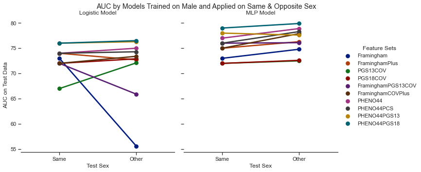

内容
[58]:
import pandas as pd
import seaborn as sns
[59]:
data_file = "performance2.tab"
df = pd.read_csv(data_file, sep='\t', header=0)
#display(df)
print(df.columns)
Index(['Feature Set', 'Model', 'Model Sex', 'Test Sex', 'AUC Test'], dtype='object')
[60]:
df_cross_sex = df[df["Test Sex"] == "Other"]
display(df_cross_sex)
df_cross_sex["Model"].unique().tolist()
| Feature Set | Model | Model Sex | Test Sex | AUC Test | |
|---|---|---|---|---|---|
| 60 | Framingham | Logistic | Female | Other | 65.4 |
| 61 | Framingham | Logistic | Male | Other | 55.6 |
| 62 | Framingham | MLP | Female | Other | 71.9 |
| 63 | Framingham | MLP | Male | Other | 74.8 |
| 64 | FraminghamPlus | Logistic | Female | Other | 72.8 |
| 65 | FraminghamPlus | Logistic | Male | Other | 72.7 |
| 66 | FraminghamPlus | MLP | Female | Other | 75.6 |
| 67 | FraminghamPlus | MLP | Male | Other | 76.3 |
| 68 | PGS13COV | Logistic | Female | Other | 67.9 |
| 69 | PGS13COV | Logistic | Male | Other | 72.1 |
| 70 | PGS13COV | MLP | Female | Other | 71.4 |
| 71 | PGS13COV | MLP | Male | Other | 72.5 |
| 72 | PGS18COV | Logistic | Female | Other | 71.5 |
| 73 | PGS18COV | Logistic | Male | Other | 72.9 |
| 74 | PGS18COV | MLP | Female | Other | 71.4 |
| 75 | PGS18COV | MLP | Male | Other | 72.6 |
| 76 | FraminghamPGS13COV | Logistic | Female | Other | 62.9 |
| 77 | FraminghamPGS13COV | Logistic | Male | Other | 65.9 |
| 78 | FraminghamPGS13COV | MLP | Female | Other | 75.8 |
| 79 | FraminghamPGS13COV | MLP | Male | Other | 76.1 |
| 80 | FraminghamCOVPlus | Logistic | Female | Other | 72.9 |
| 81 | FraminghamCOVPlus | Logistic | Male | Other | 73.4 |
| 82 | FraminghamCOVPlus | MLP | Female | Other | 75.5 |
| 83 | FraminghamCOVPlus | MLP | Male | Other | 77.9 |
| 84 | PHENO44 | Logistic | Female | Other | 74.0 |
| 85 | PHENO44 | Logistic | Male | Other | 75.0 |
| 86 | PHENO44 | MLP | Female | Other | 76.9 |
| 87 | PHENO44 | MLP | Male | Other | 78.9 |
| 88 | PHENO44PCS | Logistic | Female | Other | 74.6 |
| 89 | PHENO44PCS | Logistic | Male | Other | 74.3 |
| 90 | PHENO44PCS | MLP | Female | Other | 76.6 |
| 91 | PHENO44PCS | MLP | Male | Other | 78.3 |
| 92 | PHENO44PGS13 | Logistic | Female | Other | 75.0 |
| 93 | PHENO44PGS13 | Logistic | Male | Other | 76.3 |
| 94 | PHENO44PGS13 | MLP | Female | Other | 78.0 |
| 95 | PHENO44PGS13 | MLP | Male | Other | 77.6 |
| 96 | PHENO44PGS18 | Logistic | Female | Other | 75.5 |
| 97 | PHENO44PGS18 | Logistic | Male | Other | 76.5 |
| 98 | PHENO44PGS18 | MLP | Female | Other | 78.6 |
| 99 | PHENO44PGS18 | MLP | Male | Other | 79.9 |
[60]:
['Logistic', 'MLP']
[61]:
df_same_sex = df[df["Test Sex"] == "Same"]
display(df_same_sex)
| Feature Set | Model | Model Sex | Test Sex | AUC Test | |
|---|---|---|---|---|---|
| 0 | Framingham | Logistic | Both Sexes | Same | 78.0 |
| 1 | Framingham | Logistic | Female | Same | 73.0 |
| 2 | Framingham | Logistic | Male | Same | 73.0 |
| 3 | Framingham | MLP | Both Sexes | Same | 78.0 |
| 4 | Framingham | MLP | Female | Same | 74.0 |
| 5 | Framingham | MLP | Male | Same | 73.0 |
| 6 | FraminghamPlus | Logistic | Both Sexes | Same | 78.0 |
| 7 | FraminghamPlus | Logistic | Female | Same | 75.0 |
| 8 | FraminghamPlus | Logistic | Male | Same | 74.0 |
| 9 | FraminghamPlus | MLP | Both Sexes | Same | 79.0 |
| 10 | FraminghamPlus | MLP | Female | Same | 76.0 |
| 11 | FraminghamPlus | MLP | Male | Same | 75.0 |
| 12 | PGS13COV | Logistic | Both Sexes | Same | 76.0 |
| 13 | PGS13COV | Logistic | Female | Same | 70.0 |
| 14 | PGS13COV | Logistic | Male | Same | 67.0 |
| 15 | PGS13COV | MLP | Both Sexes | Same | 78.0 |
| 16 | PGS13COV | MLP | Female | Same | 72.0 |
| 17 | PGS13COV | MLP | Male | Same | 72.0 |
| 18 | PGS18COV | Logistic | Both Sexes | Same | 77.0 |
| 19 | PGS18COV | Logistic | Female | Same | 72.0 |
| 20 | PGS18COV | Logistic | Male | Same | 72.0 |
| 21 | PGS18COV | MLP | Both Sexes | Same | 78.0 |
| 22 | PGS18COV | MLP | Female | Same | 72.0 |
| 23 | PGS18COV | MLP | Male | Same | 72.0 |
| 24 | FraminghamPGS13COV | Logistic | Both Sexes | Same | 79.0 |
| 25 | FraminghamPGS13COV | Logistic | Female | Same | 72.0 |
| 26 | FraminghamPGS13COV | Logistic | Male | Same | 72.0 |
| 27 | FraminghamPGS13COV | MLP | Both Sexes | Same | 81.0 |
| 28 | FraminghamPGS13COV | MLP | Female | Same | 76.0 |
| 29 | FraminghamPGS13COV | MLP | Male | Same | 76.0 |
| 30 | FraminghamCOVPlus | Logistic | Both Sexes | Same | 79.0 |
| 31 | FraminghamCOVPlus | Logistic | Female | Same | 73.0 |
| 32 | FraminghamCOVPlus | Logistic | Male | Same | 72.0 |
| 33 | FraminghamCOVPlus | MLP | Both Sexes | Same | 81.0 |
| 34 | FraminghamCOVPlus | MLP | Female | Same | 77.0 |
| 35 | FraminghamCOVPlus | MLP | Male | Same | 75.0 |
| 36 | PHENO44 | Logistic | Both Sexes | Same | 80.0 |
| 37 | PHENO44 | Logistic | Female | Same | 75.0 |
| 38 | PHENO44 | Logistic | Male | Same | 74.0 |
| 39 | PHENO44 | MLP | Both Sexes | Same | 82.0 |
| 40 | PHENO44 | MLP | Female | Same | 77.0 |
| 41 | PHENO44 | MLP | Male | Same | 77.0 |
| 42 | PHENO44PCS | Logistic | Both Sexes | Same | 80.0 |
| 43 | PHENO44PCS | Logistic | Female | Same | 75.0 |
| 44 | PHENO44PCS | Logistic | Male | Same | 74.0 |
| 45 | PHENO44PCS | MLP | Both Sexes | Same | 81.0 |
| 46 | PHENO44PCS | MLP | Female | Same | 77.0 |
| 47 | PHENO44PCS | MLP | Male | Same | 76.0 |
| 48 | PHENO44PGS13 | Logistic | Both Sexes | Same | 81.0 |
| 49 | PHENO44PGS13 | Logistic | Female | Same | 76.0 |
| 50 | PHENO44PGS13 | Logistic | Male | Same | 76.0 |
| 51 | PHENO44PGS13 | MLP | Both Sexes | Same | 83.0 |
| 52 | PHENO44PGS13 | MLP | Female | Same | 78.0 |
| 53 | PHENO44PGS13 | MLP | Male | Same | 78.0 |
| 54 | PHENO44PGS18 | Logistic | Both Sexes | Same | 81.0 |
| 55 | PHENO44PGS18 | Logistic | Female | Same | 76.0 |
| 56 | PHENO44PGS18 | Logistic | Male | Same | 76.0 |
| 57 | PHENO44PGS18 | MLP | Both Sexes | Same | 83.0 |
| 58 | PHENO44PGS18 | MLP | Female | Same | 78.0 |
| 59 | PHENO44PGS18 | MLP | Male | Same | 79.0 |
[110]:
def plot_AUC(df, x = "Model Sex", y="AUC Test", hue = "Feature Set", model_type = None, kind="point",
note = ""):
print(note)
custom_params = {"axes.spines.right": False, "axes.spines.top": False}
sns.set_theme(style="ticks", rc=custom_params)
data = df
if model_type in df["Model"].unique().tolist():
data = df[df['Model'] == model_type]
else:
data = df
model_type=''
if y not in df.columns.tolist():
y = "AUC Test"
g = sns.catplot(
data=data,
x=x,
y=y,
hue=hue,
palette="dark",
alpha=0.8,
height=5,
kind=kind,
ci=None,
col = "Model"
)
g.despine(left=True)
g.set_axis_labels(x, "AUC on Test Data")
g.legend.set_title("Feature Sets")
if model_type == '':
model_type = "models"
else:
model_type += " model"
g.set_titles("{col_name} {col_var}")#(title="AUC of {} with different feature sets predicting risk of CAD ".format(model_type))
g.fig.subplots_adjust(top=0.9) # adjust the Figure in rp
g.fig.suptitle(note)
g.savefig("{}.png".format(note))
[111]:
plot_AUC(df_same_sex, x="Model Sex", y="AUC Test", hue="Feature Set", kind="strip",
note="AUC by Model Trained and Applied to Same Sex")
AUC by Model Trained and Applied to Same Sex

[112]:
plot_AUC(df_cross_sex, x="Model Sex", y="AUC Test", hue="Feature Set", kind="strip",
note="AUC by Models Trained and Applied to Opposite Sex")
AUC by Models Trained and Applied to Opposite Sex

[113]:
plot_AUC(df[df["Model Sex"] == "Female"], x="Test Sex", y = "AUC Test", hue = "Feature Set", kind="point",
note = "AUC by Models Trained on Female and Applied to Same & Opposite Sex")
AUC by Models Trained on Female and Applied to Same & Opposite Sex

[114]:
plot_AUC(df[df["Model Sex"] == "Male"], x="Test Sex", y = "AUC Test", hue = "Feature Set", kind="point",
note = "AUC by Models Trained on Male and Applied on Same & Opposite Sex")
AUC by Models Trained on Male and Applied on Same & Opposite Sex

[ ]:
[ ]: